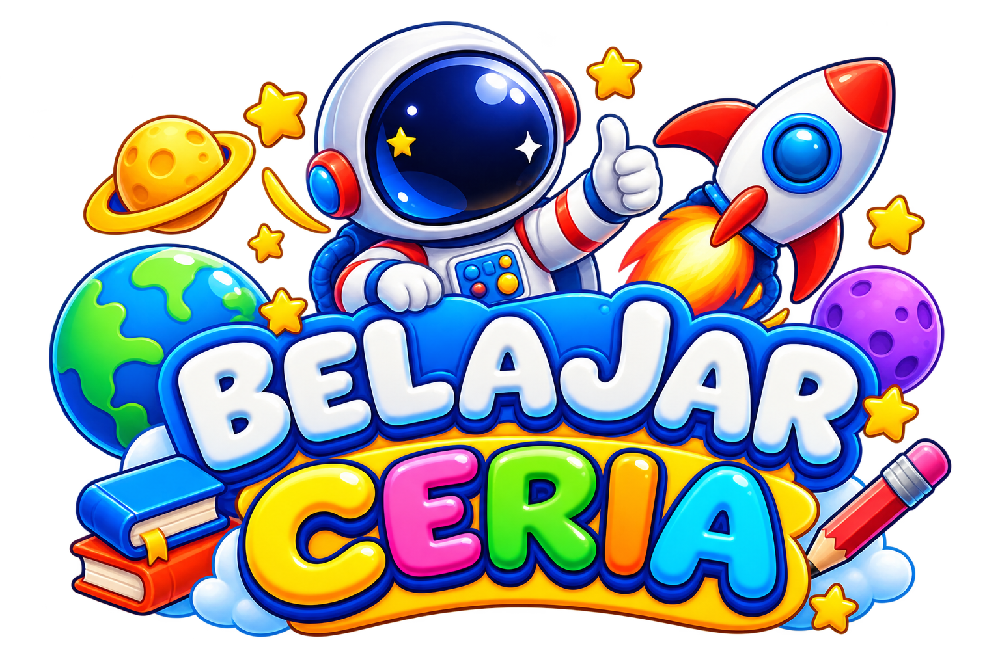
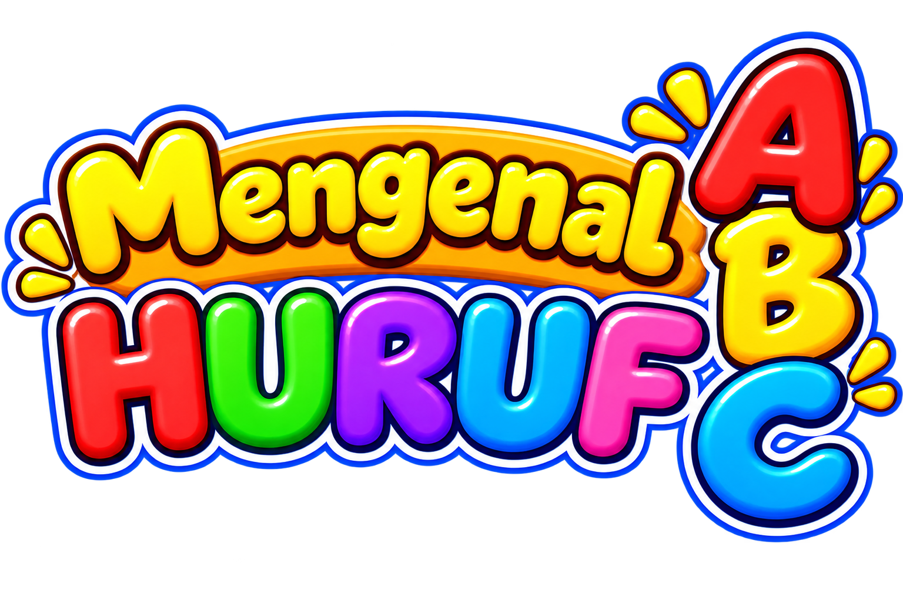
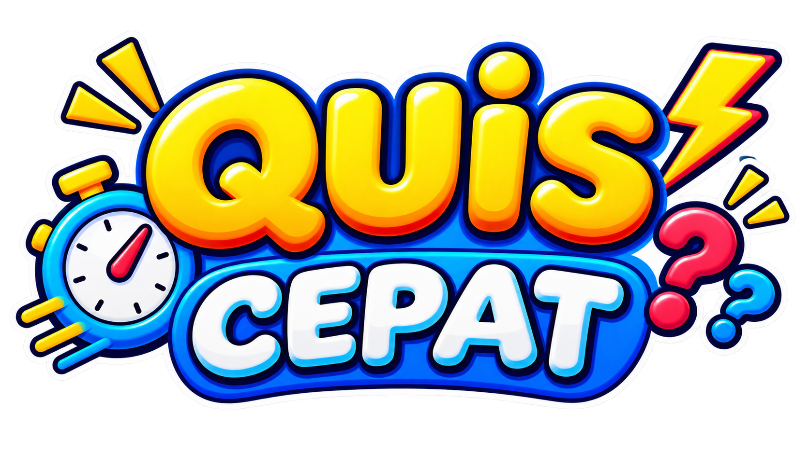
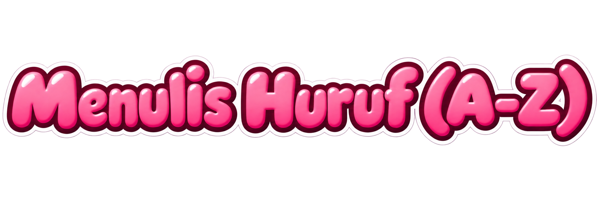
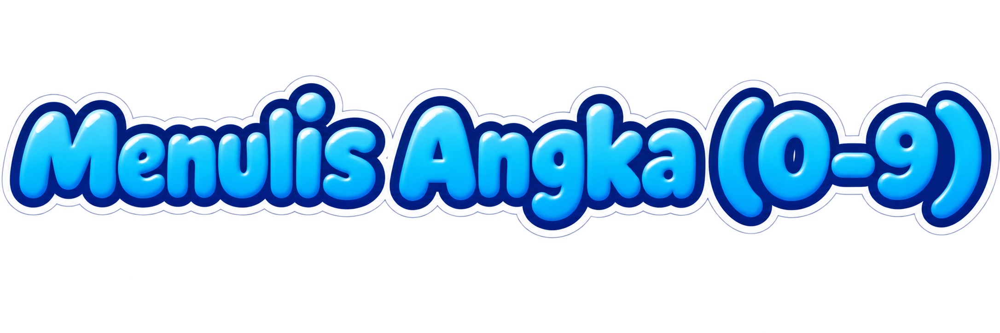
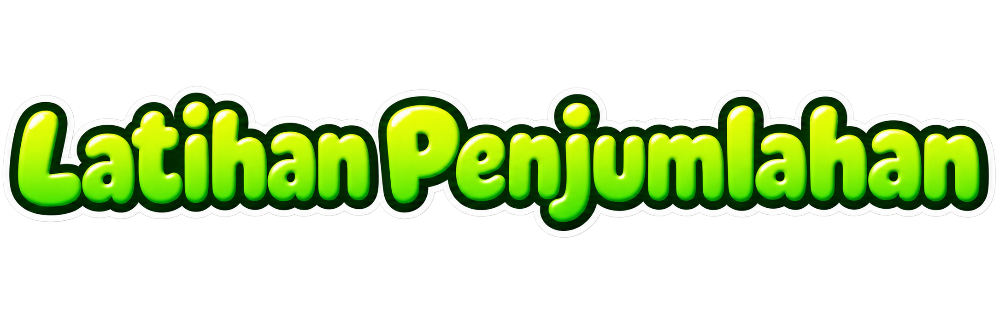
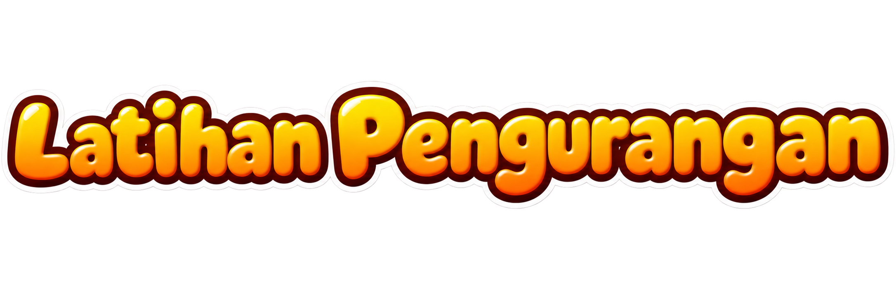

Yuk pilih mau belajar apa dulu?






Semua bintang, lencana, dan skor berhitung akan dihapus dan tidak bisa dikembalikan. Yakin mau lanjut?
Gerakkan tangan atau mouse mengikuti bentuk.
🔢 Tekan angka jawabannya: